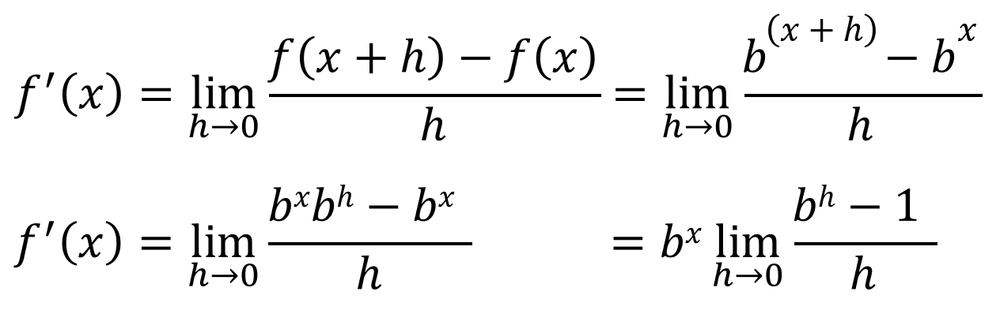
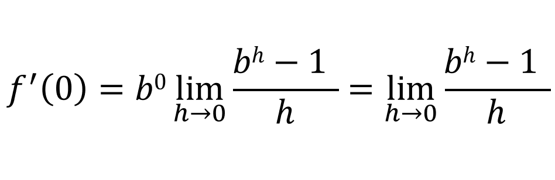
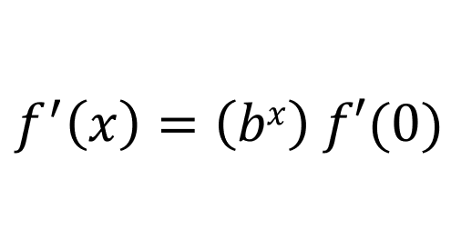
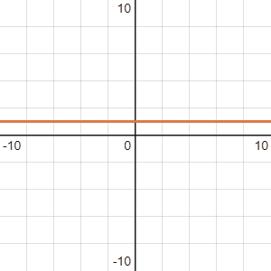
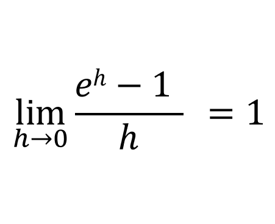
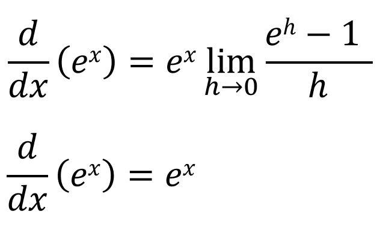

Lets compute the derivative of f(x) = bx, using the definition of derivative:
If we wanted to find the derivative at 0:
Therefore:
The graph below shows \(b^x\) (purple line), with the orange line having the same gradient as \(b^x\) at \(x=0\):
When \(b=1\), the gradient is 0, and it keeps increasing as b increases. There must be some value of b where \(f'(0) = 1\). That value is e. The value of e correct to 3 decimal places is 2.718. The constant e is defined like this:
Since f'(x) = bxf'(0):
The constant e is such a number, where the derivative of ex is ex.